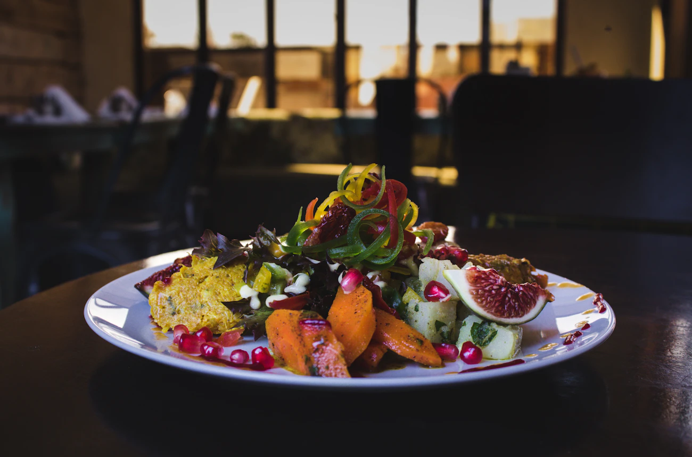
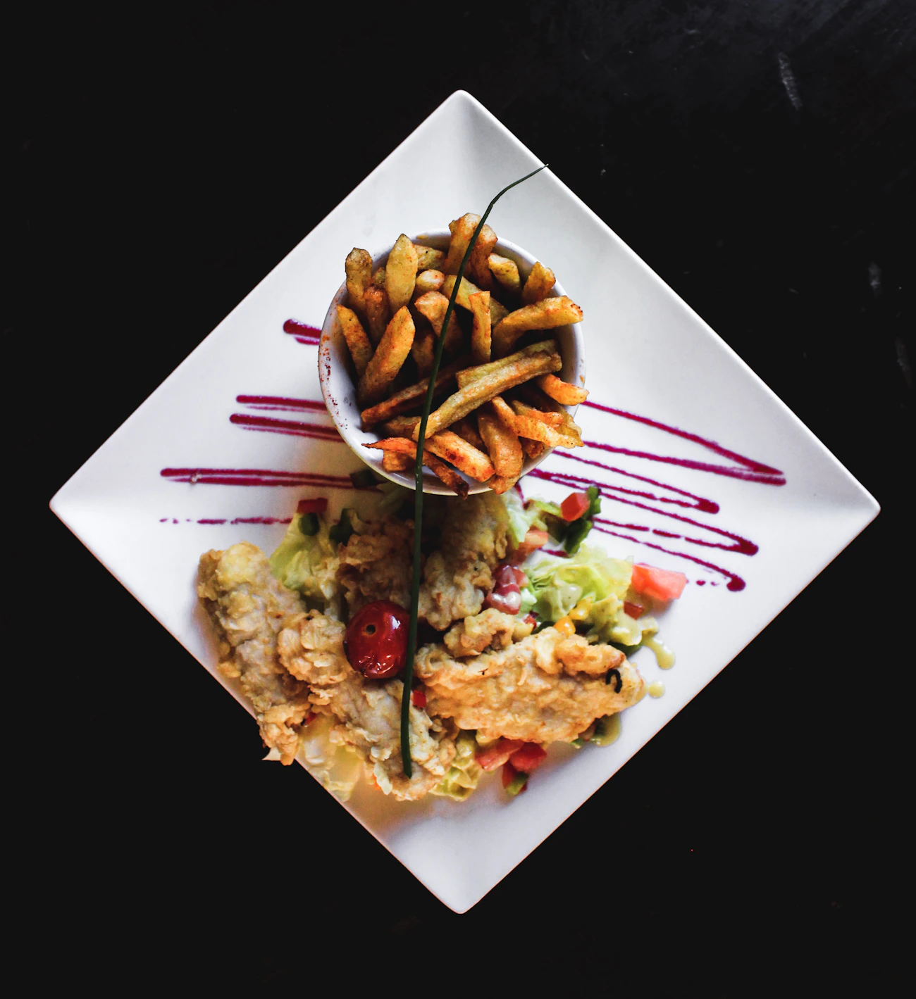
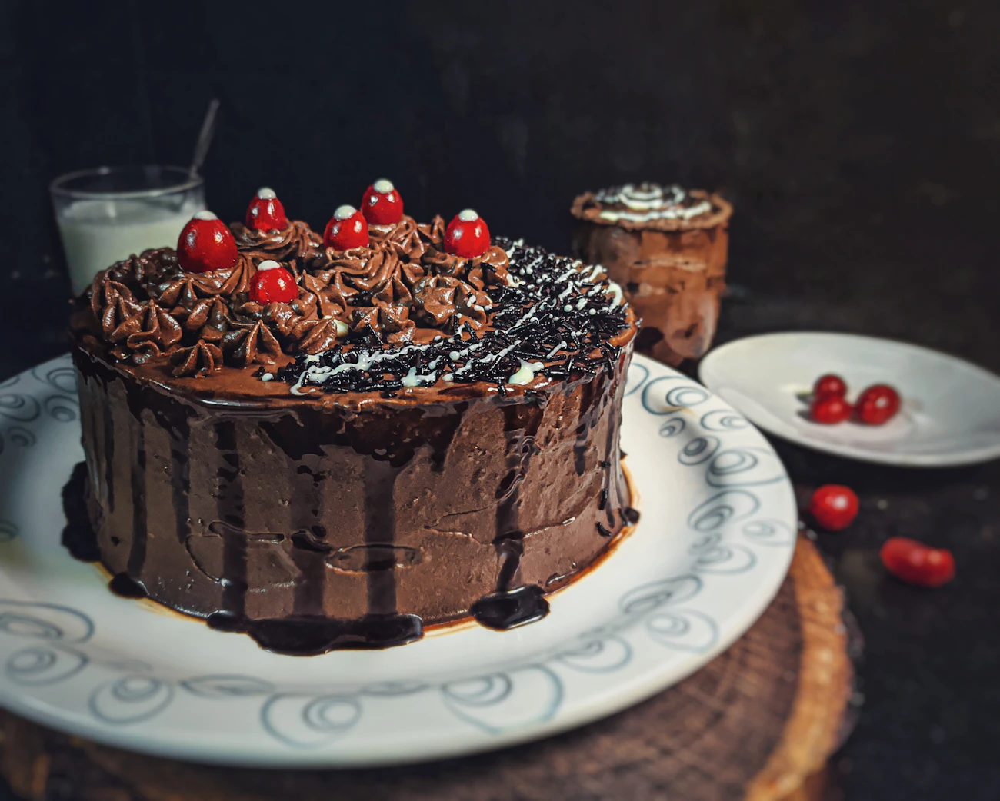
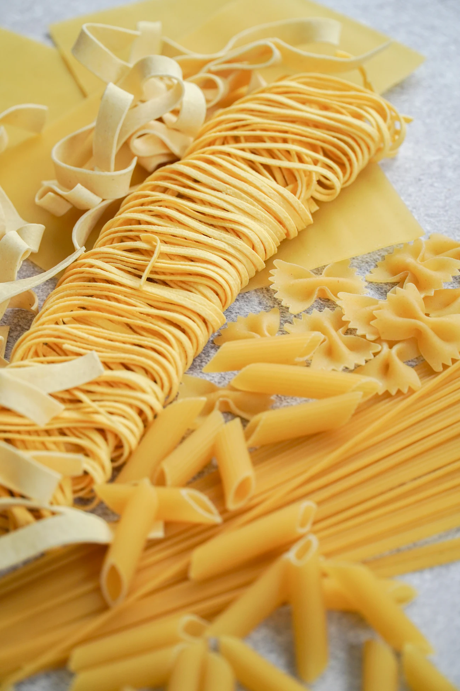
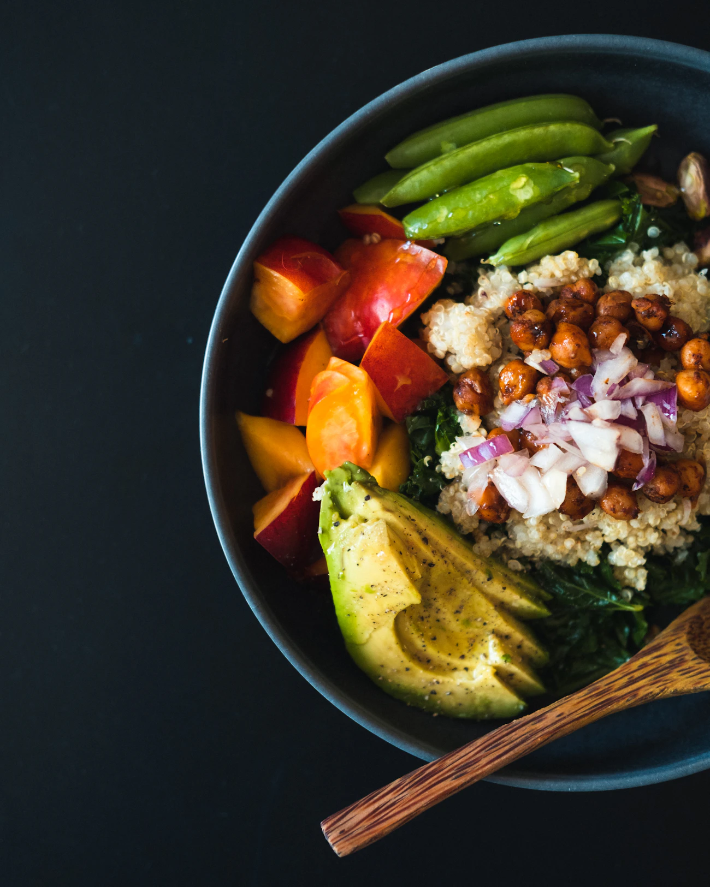

Latest recipes
PastaCreamy mushroom pasta⏱ 25 min◔ Easy

SaladsGarden salad with feta⏱ 15 min◔ EasyDessertsStrawberry layer cake⏱ 90 min◔ Hard
VegetablesRoast vegetables⏱ 40 min◔ EasySaladsGreen bowl⏱ 20 min◔ Easy
DessertsChocolate cake⏱ 70 min◔ Medium
PastaFresh tagliatelle⏱ 60 min◔ Medium
VegetablesWarm grain bowl⏱ 30 min◔ Easy